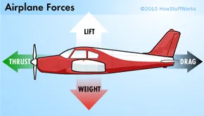

Finding an aerodynamic car shape would be essential throughout this project, as it will create more skin friction and therefore, reduce air resistance (Drag). From the air-resistance page, we learned that drag is a force the pushes something back. We also learned that it is a force that hinders the speed maintenance or acceleration of a certain object. Finding an aerodynamic car shape would decrease the amount of force that pushes an object back, therefore aiding the acceleration and speed maintenance of the car.

Four forces of an airplane (We will mainly be discussing about drag)
Air resistance is another term known as "Drag". Drag is a type of force that pushes the plane backwards, therefore slowing them down as they collide with the air molecules. The faster we go, the more quickly the air moves, and the more force we but on it's part, the harder the air puts on our part (Equal and Opposite reaction). Although the thrust will certainly be much greater than the drag for some part of the phase, it is still important to reduce the drag as much as possible, as it will potentionally affect the speed maintenance of the car and therefore, the time completion of the track. The aerodynamics page will display a variety of shapes and show how much drag will be constantly pushing it back while the object is in motion.